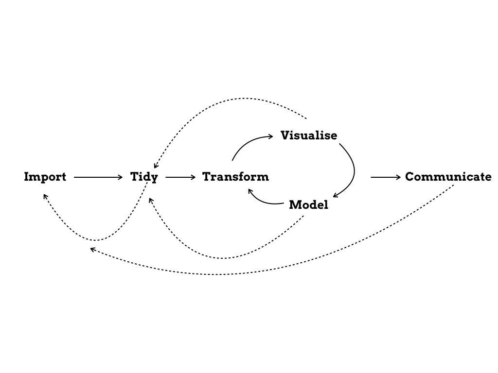

Chapter 1 Data Analysis
Data analysis is a term that turns raw data into knowledge. This involves data import, data wrangling, statistical data analysis, and turning the results into something that is readable by a human.
Grolemund & Wickham, 20171 presented this as a diagram.

The diagram makes clear, that the data analysis workflow consists of different modules that depend on the previous one, and that there is directionality in the flow: an entrance, iteration and en exit. That only tidy data is useful for the analysis, that wrangling is linear, but that understanding is an iterative process, that the analysis is a portable & isolated box. Lastly, sharing of results is key.
1.1 Data analysis in reality
In reality, data wrangling is rarely linear, instead a forth and back. Therefore, flexibility in moving through these modules with software is key.

1.2 Requirements to data analysis software
What else is important for software?
Software should should be used by others (otherwise, sharing code is difficult), be continuously developed & improved (new data formats, new communication formats), easy to use (high-level language), Translation of modules to Code, make it easy to exchange results with others.
There are other ways to see data analysis, for example Elements & Principles (Hicks & Peng, 2019), that lays out the elements that build a data analysis, and the principles in assembling them.↩